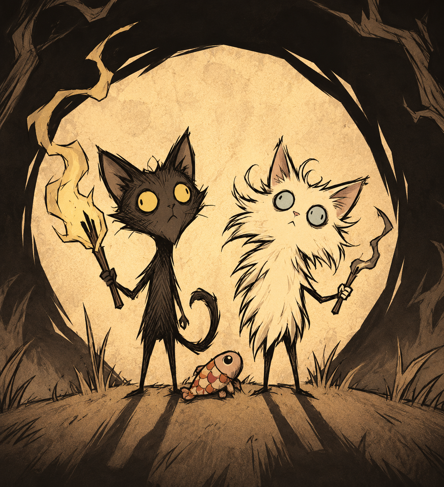

A small tale of mischief
Podrick’s
Violin
Quiet paws. Curious eyes.
Something stirs in the shadows.
Preparing the game…
Sound & settings
To return here, tap the four corners clockwise,
starting at the top left. Or press Escape.

A small tale of mischief
Quiet paws. Curious eyes.
Something stirs in the shadows.
Preparing the game…
To return here, tap the four corners clockwise,
starting at the top left. Or press Escape.